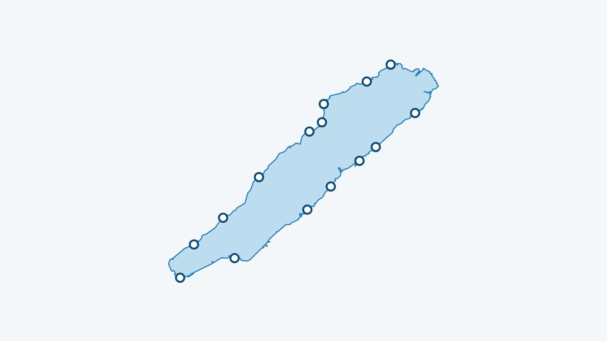
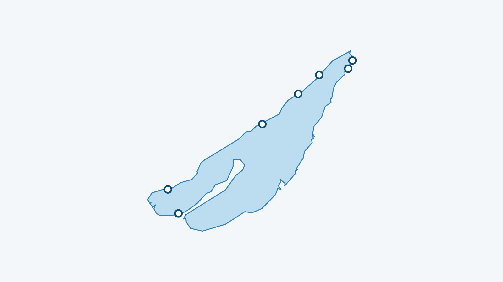
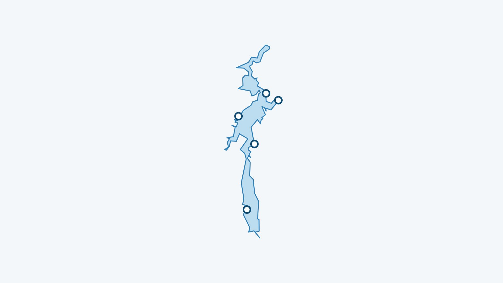
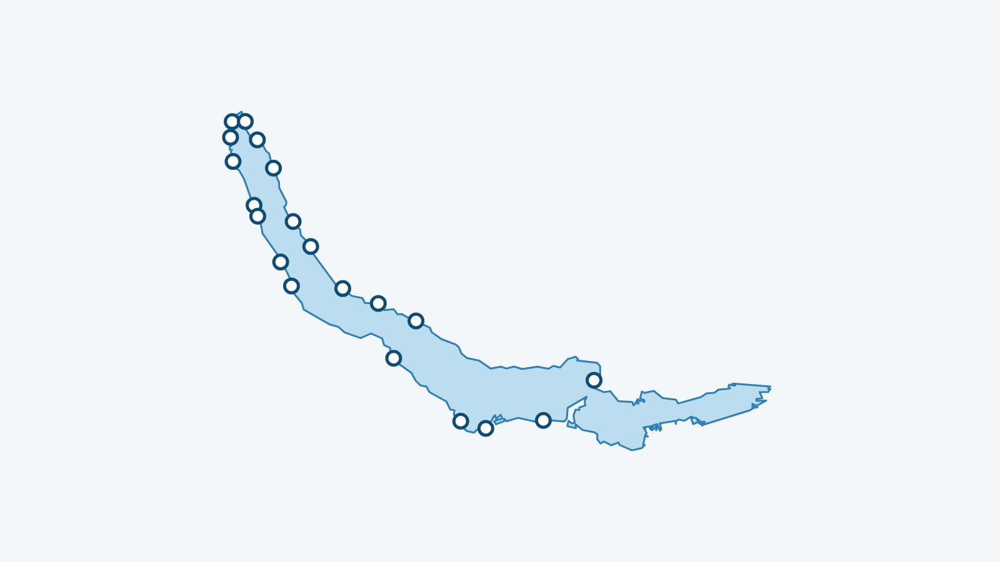
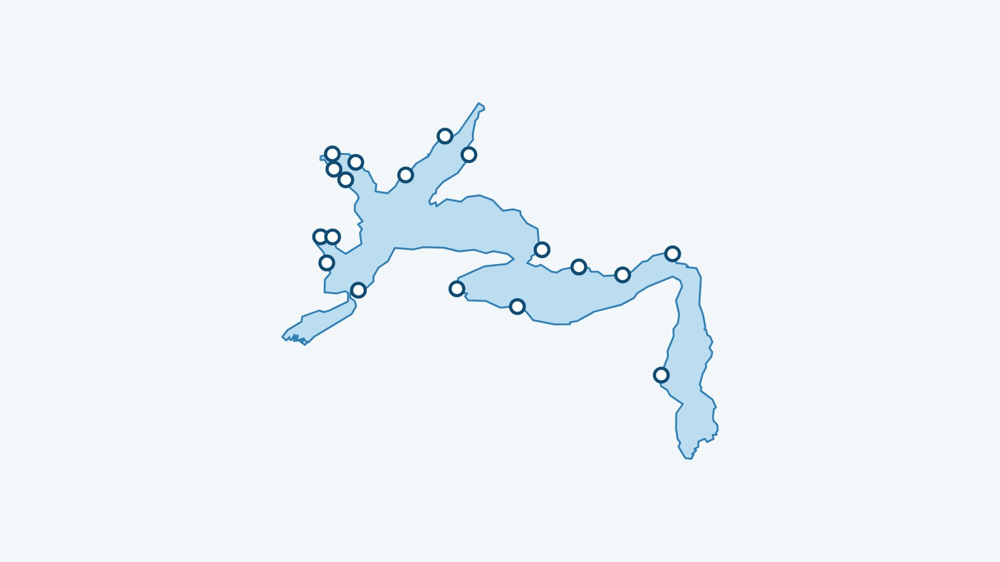
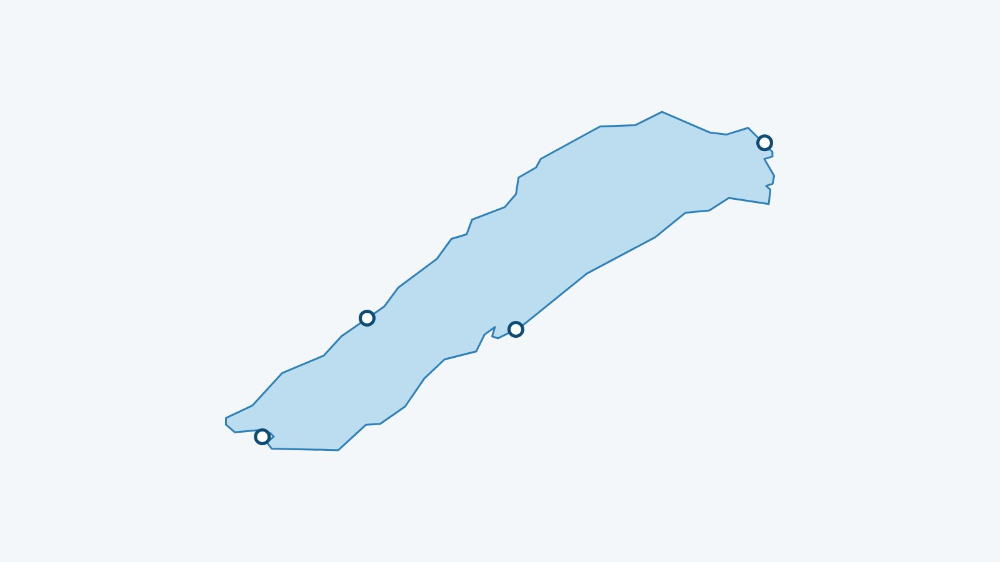

-

Température de l’eau du lac de Neuchâtel aujourd’hui, plage par plage
La température de l’eau du lac de Neuchâtel à 70 cm sous la surface, devant chacune des 15 plages suivies, mise à jour toutes les trois heures. D’où vient le chiffre et ce qu’il ne dit pas.
Lire l’article → -

Température de l’eau du lac de Bienne aujourd’hui, plage par plage
La température de l’eau du lac de Bienne à 70 cm sous la surface, devant chacune des 7 plages suivies, mise à jour toutes les trois heures. D’où vient le chiffre et ce qu’il ne dit pas.
-

Température de l’eau du lac de Morat aujourd’hui, plage par plage
La température de l’eau du lac de Morat à 70 cm sous la surface, devant chacune des 4 plages suivies, mise à jour toutes les trois heures. D’où vient le chiffre et ce qu’il ne dit pas.
-

Température de l’eau du lac de la Gruyère aujourd’hui, et d’où vient le chiffre
La température de l’eau du lac de la Gruyère à 70 cm sous la surface, pour les 5 plages suivies, mise à jour toutes les trois heures. D’où vient le chiffre et ce qu’il ne dit pas.
-

Température de l’eau du lac de Joux aujourd’hui, plage par plage
La température de l’eau du lac de Joux à 70 cm sous la surface, devant chacune des 2 plages suivies, mise à jour toutes les trois heures. D’où vient le chiffre et ce qu’il ne dit pas.
-

Température de l’eau du lac de Zurich aujourd’hui, plage par plage
La température de l’eau du lac de Zurich à 70 cm sous la surface, devant chacune des 20 plages suivies, mise à jour toutes les trois heures. D’où vient le chiffre et ce qu’il ne dit pas.
-

Température de l’eau du lac des Quatre-Cantons aujourd’hui, plage par plage
La température de l’eau du lac des Quatre-Cantons à 70 cm sous la surface, devant chacune des 18 plages suivies, mise à jour toutes les trois heures. D’où vient le chiffre et ce qu’il ne dit pas.
-

Température de l’eau du lac de Thoune aujourd’hui, et d’où vient le chiffre
La température de l’eau du lac de Thoune à 70 cm sous la surface, pour les 8 plages suivies, mise à jour toutes les trois heures. D’où vient le chiffre et ce qu’il ne dit pas.
-

Température de l’eau du lac de Brienz aujourd’hui, et d’où vient le chiffre
La température de l’eau du lac de Brienz à 70 cm sous la surface, pour les 4 plages suivies, mise à jour toutes les trois heures. D’où vient le chiffre et ce qu’il ne dit pas.
-

Température de l’eau du lac de Constance aujourd’hui, et d’où vient le chiffre
La température de l’eau du lac de Constance à 70 cm sous la surface, pour les 12 plages suivies, mise à jour toutes les trois heures. D’où vient le chiffre et ce qu’il ne dit pas.
-

Température de l’eau du lac de Lugano aujourd’hui, plage par plage
La température de l’eau du lac de Lugano à 70 cm sous la surface, devant chacune des 14 plages suivies, mise à jour toutes les trois heures. D’où vient le chiffre et ce qu’il ne dit pas.
-

Température de l’eau du lac Majeur aujourd’hui, et d’où vient le chiffre
La température de l’eau du lac Majeur à 70 cm sous la surface, pour les 7 plages suivies, mise à jour toutes les trois heures. D’où vient le chiffre et ce qu’il ne dit pas.
-

Saunas au bord du Léman : les 11 adresses, de Genève à Vevey
Les 11 saunas au bord du Léman suivis par Mon Lac : yourtes, tonneaux, bateau-sauna, bains historiques. Saison, lieu et lien vers le site de chacun.
-

Saunas flottants et bateaux-saunas en Suisse : 6 adresses sur quatre lacs
Bateaux-saunas et radeaux-saunas sur le Léman, le lac de Bienne, le lac de Zurich et le lac des Quatre-Cantons : 6 adresses avec lieu de départ et site de réservation.
-

Saunas au bord du lac de Zurich : 4 adresses, de la ville à Rapperswil
Les 4 saunas du lac de Zurich suivis par Mon Lac : sauna du Seebad Enge, Seesauna de Stäfa et bateaux-saunas. Lieu, saison et lien vers chaque site.
-

Bain d’hiver dans les lacs de Neuchâtel, de Bienne et de Morat : plages et saunas
Bain d’hiver dans les lacs de Neuchâtel, de Bienne et de Morat : la règle de durée de la SSS, l’eau du jour plage par plage, les plages suivies et les saunas au bord de l’eau.
-

Bain d’hiver à Zurich : plages du lac, eau du jour et saunas pour se réchauffer
Bain d’hiver dans le lac de Zurich et le Greifensee : la règle de durée de la SSS, l’eau du jour plage par plage, les plages suivies et les saunas au bord du lac.
-

Qualité de l’eau de baignade au Léman : comment savoir si on peut se baigner
Qui analyse l’eau des plages du Léman, comment lire les classements, et pourquoi une analyse d’août ne dit rien de l’eau en novembre.
-

Bain d’hiver dans le Léman : bien débuter à Genève et Lausanne
Combien de temps rester dans l’eau, comment entrer, où se baigner et se réchauffer à Genève et Lausanne : le guide du bain d’hiver dans le Léman, avec l’eau du jour plage par plage.
-

Plages du Léman côté français : d’Évian à Chens-sur-Léman
Les plages de la rive française du Léman, de Meillerie à Chens-sur-Léman, avec la température de l’eau du jour, les restos et les écoles de wake autour.
-

Afterdrop : pourquoi on a encore plus froid après un bain d’hiver, et comment se réchauffer
Pourquoi le corps continue de se refroidir une dizaine de minutes après la sortie de l’eau, comment se changer, quoi boire, et ce qu’il vaut mieux éviter, comme la douche chaude.
-

Kitesurf, windsurf et wingfoil sur le Léman : le bon vent et les bons spots
Quelle force de vent pour le kitesurf, le windsurf et le foil sur le Léman, pourquoi la bise fait les meilleurs downwinds, et où louer ou apprendre.
-

La bise sur le Léman : ce qu’elle change pour la baignade, le paddle et le kite
D’où vient la bise, comment la reconnaître et à partir de quand elle gêne la baignade et le paddle, alors que kitesurfeurs, windsurfeurs et foilers l’attendent.
-

Matériel pour le bain d’hiver : la liste complète avant d’aller au Léman
Bonnet, chaussons et gants en néoprène, bouée, tapis pour se changer, cape et thermos : tout ce qu’il faut emporter pour un bain d’hiver dans le Léman, et pourquoi.
-

Où se baigner à Genève : les plages du canton, une par une
Des Bains des Pâquis à Hermance, les plages genevoises du Léman avec leurs buvettes, et la température de l’eau du jour pour chacune.
-

Paddle sur le Léman : quand le lac est assez calme, et où louer
À partir de quel vent le paddle devient difficile sur le Léman, comment lire les rafales, et les loueurs de paddle de Genève à Saint-Gingolph.
-

Wakeboard, wakesurf et ski nautique sur le Léman : les écoles et clubs
De Pregny à Thonon, les écoles et clubs qui sortent le bateau pour le wakeboard, le wakesurf et le ski nautique, et pourquoi il faut un lac lisse.
-

Température du lac Léman : d’où viennent les chiffres et pourquoi ils varient
Comment l’eau du Léman est calculée à 70 cm devant chaque plage, pourquoi elle peut perdre plusieurs degrés en deux jours, et où la consulter en direct.
-

Buvettes et restos au bord du Léman : nos adresses les pieds dans l’eau
Les terrasses au bord de l’eau de Genève, La Côte, Lausanne, la Riviera et la rive française, avec leurs saisons d’ouverture.
-

Choc thermique : les 90 premières secondes dans l’eau froide du Léman
Ce que fait le corps en entrant dans une eau à 10 °C, pourquoi il ne faut pas plonger, comment respirer pendant la première minute, et pourquoi voir un médecin avant de commencer.